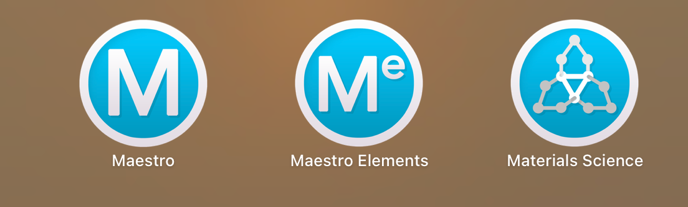

Schrödinger 사용 안내
이 페이지는 Schrödinger 소프트웨어의 기본 사용 목적, 분자동역학 시뮬레이션 적용 예시, 모델 구축 및 분석 과정에 대해 간단히 정리한 문서입니다.
구체적인 사용 방법은 연구 목적과 시스템에 따라 달라질 수 있으므로, 실제 계산을 시작하기 전에 공식 튜토리얼과 기존 연구 예시를 함께 참고하는 것이 좋습니다.
1. Schrödinger 소프트웨어란?
Schrödinger는 분자 모델링, 분자동역학 시뮬레이션, 구조 최적화, 물성 분석 등에 사용할 수 있는 계산 소프트웨어입니다.
우리 실험실에서는 주로 고분자 및 용매 시스템의 분자동역학 시뮬레이션에 사용합니다.
주요 사용 목적은 아래와 같습니다.
- 고분자 분자 모델 구축
- 용매 또는 이온성 액체와의 혼합계 구성
- 다양한 온도 조건에서의 분자동역학 시뮬레이션
- 고분자 사슬의 형태 변화 분석
- 클러스터, RDF, MSD, 접촉면적, 자유부피 등 분석
2. 참고자료 및 튜토리얼
Schrödinger 사용법은 목적에 따라 매우 다양하므로, 필요한 기능은 공식 홈페이지 또는 기존 튜토리얼을 참고하는 것이 좋습니다.
!!! note "참고 영상"
실험실에 Schrödinger 관련 교육 영상이 있을 수 있지만, 영상 파일은 용량이 커서 웹사이트에 직접 업로드하기 어렵습니다.
필요한 경우 실험실 담당자 또는 선배에게 문의하시기 바랍니다.
아래 이미지는 Schrödinger 사용 과정 또는 관련 설정 예시입니다.

3. 연구 예시
Schrödinger를 이용한 계산 과정은 아래 논문과 같은 연구를 참고할 수 있습니다.
Polyvinylpyrrolidone/ionic liquid mixture with loop-type phase behavior: Experiments and molecular dynamics simulations
이 논문에서는 고분자/이온성 액체 혼합계의 상거동을 실험과 분자동역학 시뮬레이션을 통해 분석하였습니다.
비슷한 방식으로 고분자-용매 또는 고분자-이온성 액체 시스템의 온도 의존적 상거동을 확인할 수 있습니다.
4. 기본 사용 흐름
Schrödinger를 이용한 분자동역학 시뮬레이션은 보통 아래 순서로 진행됩니다.
4.1 분자 모델 구축
먼저 연구하고자 하는 고분자, 용매, 이온성 액체 등의 분자 구조를 만듭니다.
확인할 내용:
- 고분자 반복단위 구조
- 고분자 사슬 길이
- 용매 또는 첨가제 구조
- 전하 상태
- 분자 수 및 조성
4.2 혼합계 또는 시뮬레이션 박스 구성
구축한 분자들을 이용하여 시뮬레이션 박스를 만듭니다.
확인할 내용:
- 고분자 개수
- 용매 분자 개수
- 혼합 비율
- 박스 크기
- 초기 밀도
- 주기적 경계조건 적용 여부
4.3 분자동역학 시뮬레이션 설정
연구 목적에 따라 NPT, NVT 등 적절한 시뮬레이션 조건을 설정합니다.
예시:
| 조건 | 의미 |
|---|---|
| NPT | 입자 수, 압력, 온도 일정 |
| NVT | 입자 수, 부피, 온도 일정 |
| Temperature | 시뮬레이션 온도 |
| Pressure | 압력 조건 |
| Simulation time | 계산 시간 |
| Force field | 사용할 힘장 |
!!! warning "주의"
시뮬레이션 조건은 연구 목적에 따라 달라집니다.
기존 논문이나 선배의 계산 파일을 참고하여 조건을 설정하는 것이 좋습니다.
4.4 온도별 상거동 분석
서로 다른 온도에서 시뮬레이션을 수행하면, 고분자 혼합계의 상분리 또는 응집 거동을 확인할 수 있습니다.
확인할 수 있는 내용:
- 고분자 사슬의 뭉침 정도
- 용매와 고분자의 접촉 정도
- 클러스터 형성 여부
- 온도 변화에 따른 구조 변화
- 상분리 또는 재혼합 경향
5. 자주 사용하는 분석 항목
Schrödinger 또는 후처리 과정을 통해 아래와 같은 분석을 수행할 수 있습니다.
| 분석 항목 | 의미 |
|---|---|
| Cluster analysis | 분자들이 얼마나 모여 있는지 확인 |
| RDF | 특정 원자 또는 분자 사이의 거리 분포 확인 |
| MSD | 분자의 이동성 확인 |
| Solvent accessible surface area | 용매가 접근 가능한 표면적 확인 |
| Contact area | 고분자-용매 또는 고분자-첨가제 접촉 정도 확인 |
| Free volume | 시스템 내부의 빈 공간 분석 |
| Radius of gyration | 고분자 사슬의 크기 변화 확인 |
6. 계산 전 체크리스트
계산을 시작하기 전에 아래 내용을 확인합니다.
- [ ] 분자 구조가 정확한지 확인
- [ ] 고분자 반복단위와 사슬 길이 확인
- [ ] 용매 및 첨가제 분자 수 확인
- [ ] 박스 크기와 밀도 확인
- [ ] Force field 설정 확인
- [ ] NPT / NVT 조건 확인
- [ ] 온도 및 압력 조건 확인
- [ ] 계산 시간 확인
- [ ] 저장 경로 확인
- [ ] 결과 파일 백업 위치 확인